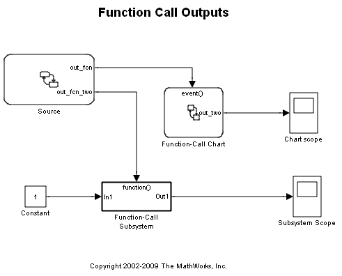
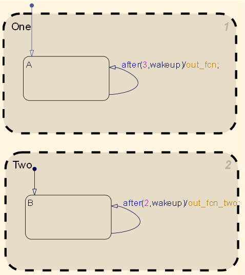
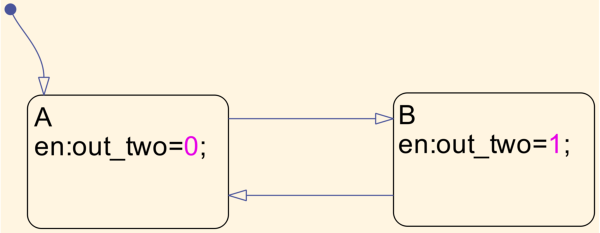
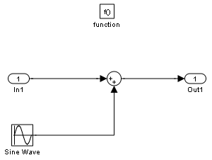
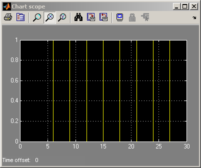
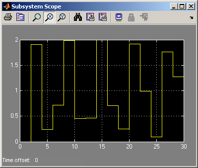

Driving Function Call Subsystems and Charts from Stateflow® Using Function Call Outputs
This demonstration illustrates the use of function call event outputs from a Stateflow® chart to drive other Stateflow® charts as well as Simulink® function call subsystem.
Contents
The chart called Source has two output events called out_fcn and out_fcn_two which are toggled by the two parallel states One and Two respectively.
The out_fcn event is connected through Simulink® to drive the Stateflow chart called Function-Call Chart. Since Source calls the out_fcn event every three simulation time steps, therefore, the Function-Call Chart toggles state once every three time steps rather than every simulation step.
Similarly, the 'Function-call Subsystem' is activated every 2 time steps by receiving the function call signal named 'out_fcn_two'.
Simulation Output
Notice that in the output plots, the time distance between each sample point is 3 for the 'Function-Call Chart' and 2 for the function-call subsystem. This is easier to view if you zoom into the x-axis of the plots.
 